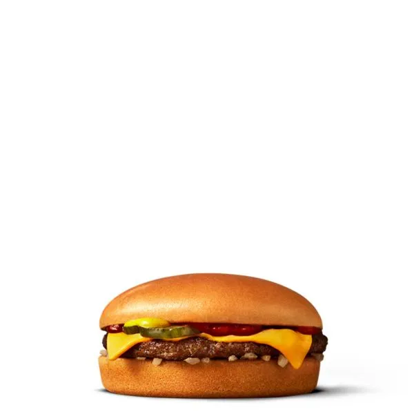

Cheeseburger
Innehåller
- Nötkött
- Saltgurka
- Lök
- Ketchup
- Senap
- Ost
Beskrivning
Beskrivning Njut av den ostliknande läckerheten hos en McDonald's Cheeseburgare! Vår enkla, klassiska cheeseburgare börjar med en burgarbiff av 100 % rent nötkött som kryddats med en nypa salt och peppar. McDonald's Cheeseburger toppas med en syrlig saltgurka, hackad lök, ketchup, senap och en skiva smältande amerikansk Ost. Den innehåller inga konstgjorda smaker, konserveringsmedel eller tillsatta färger från konstgjorda källor.